6L50/6L80/6L90 - Automatic Transmission
Control Solenoid Valve and Transmission Control Module Assembly Replacement
Removal Procedure
Important: The valve body must be removed from the transmission to replace the control solenoid valve and transmission control module assembly.

1. Remove the transmission oil pan and filter. Refer to Automatic Transmission Fluid, Fluid Pan and/or Filter Replacement (Removal and Replacement) .
2. Remove the electrical connector passage sleeve. Refer to Automatic Transmission Electrical Connector Passage Sleeve Replacement (Automatic Transmission Electrical Connector Passage Sleeve Replacement) .
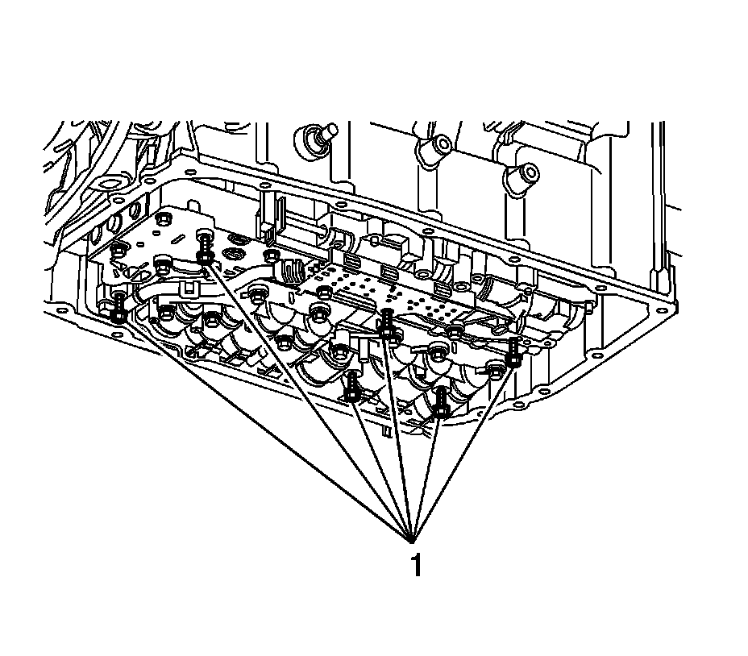
3. Remove the valve body bolts (1).
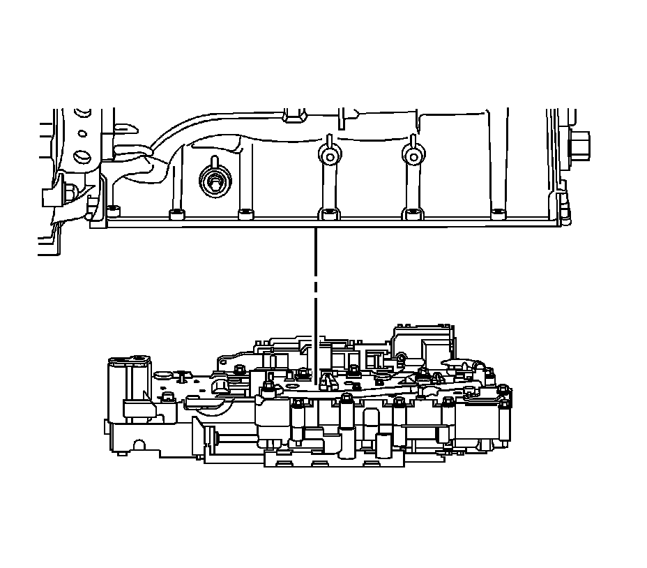
4. Remove the upper and lower control valve body assembly.
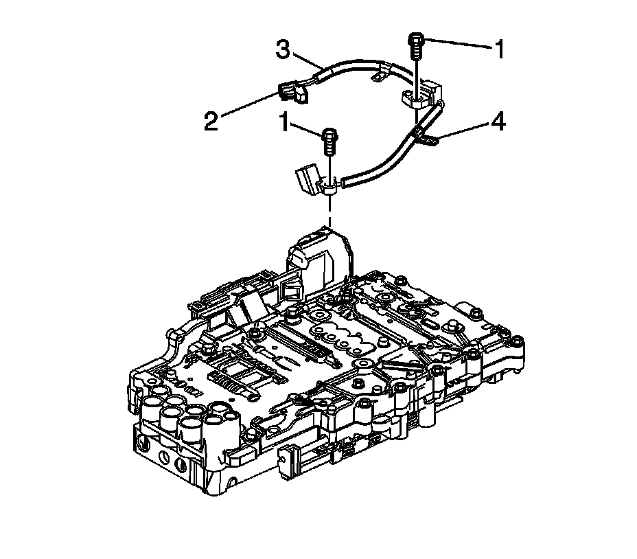
5. Disconnect the speed sensor electrical connector (2) from the control solenoid valve assembly.
6. Turn the control valve body assembly over.
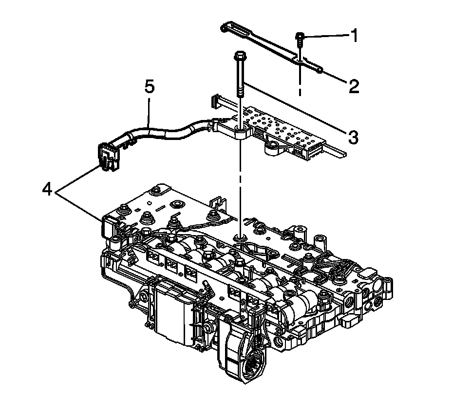
Important: Release the connector lock before disconnecting.
7. Disconnect the manual shift shaft position switch connector (4) from the control solenoid valve assembly.
8. Remove the bolt (3) and remove the manual shift shaft position switch assembly.
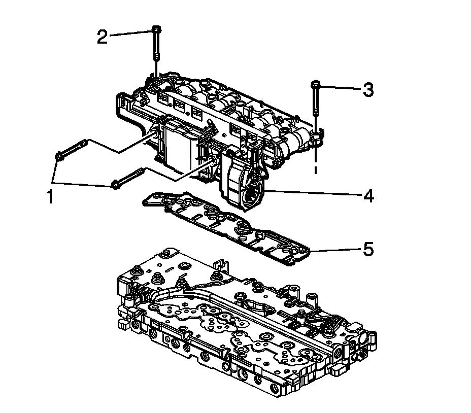
9. Remove the 2 bolts (1) from the "heat sink" side of the control solenoid valve assembly.
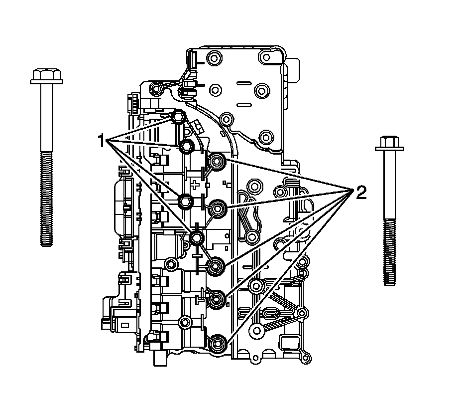
10. Remove the 5 bolts (2) and the 4 bolts (1) securing the control solenoid valve assembly to the control valve body assembly.
11. Remove the control valve body assembly.
Notice: Use care when removing or installing the filter plate assembly. A broken or missing retaining tab may not adequately secure the filter plate to the control solenoid valve assembly, resulting in possible damage or contamination.
12. Carefully remove and discard the filter plate assembly (5).
Installation Procedure
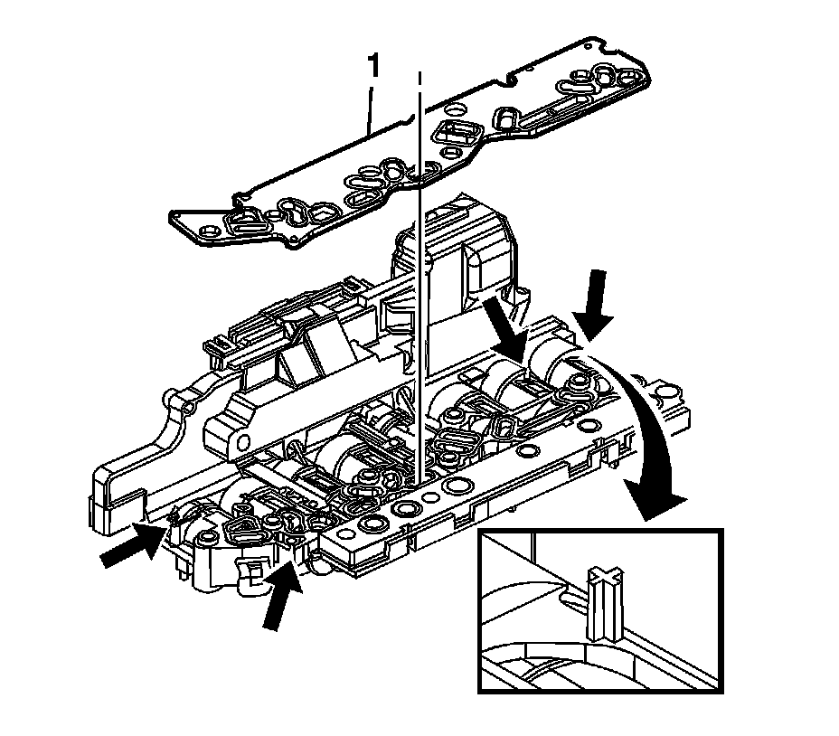
Important: Inspect the 4 filter plate retaining tabs on the control solenoid valve assembly. A broken or missing tab may not adequately secure the filter plate to the control solenoid valve assembly.
1. Install a NEW filter plate assembly (1).
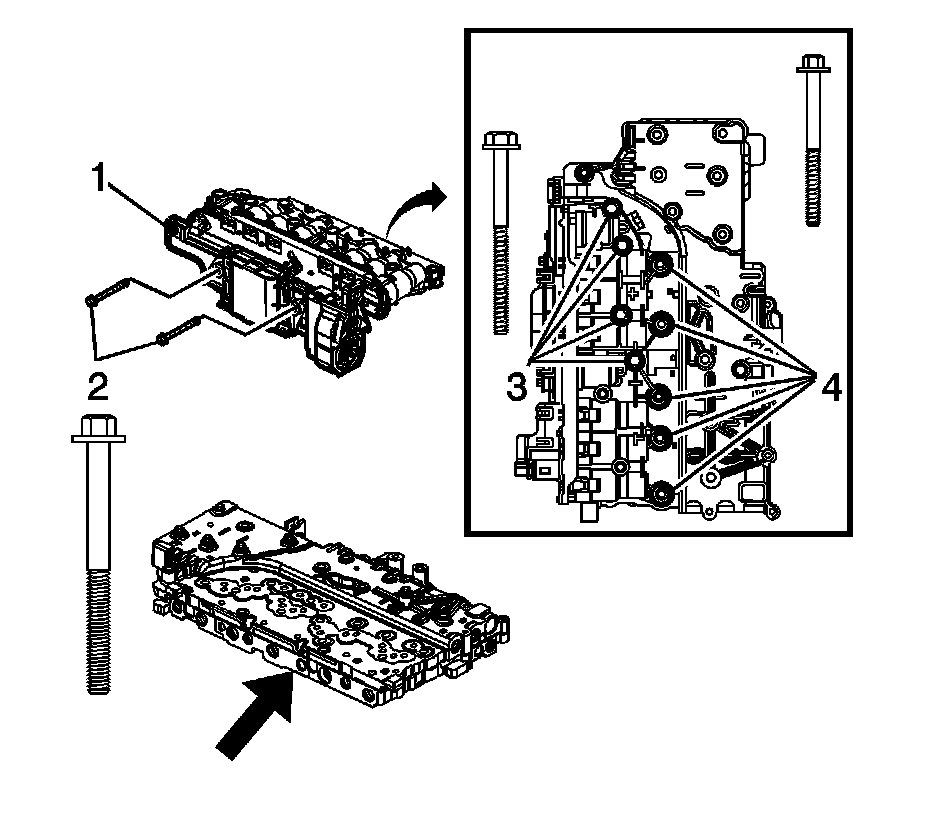
Important: Note the locator pin on the control valve lower body assembly.
2. Align the control solenoid valve assembly (1) to the control valve lower body assembly.
3. Install the 2 bolts (2), through the "heat sink" side of the control solenoid valve assembly (1). Hand tighten only.
4. Install the 4 bolts (1) and 5 bolts (2) securing the control solenoid valve assembly to the control valve lower body assembly. Hand tighten only.
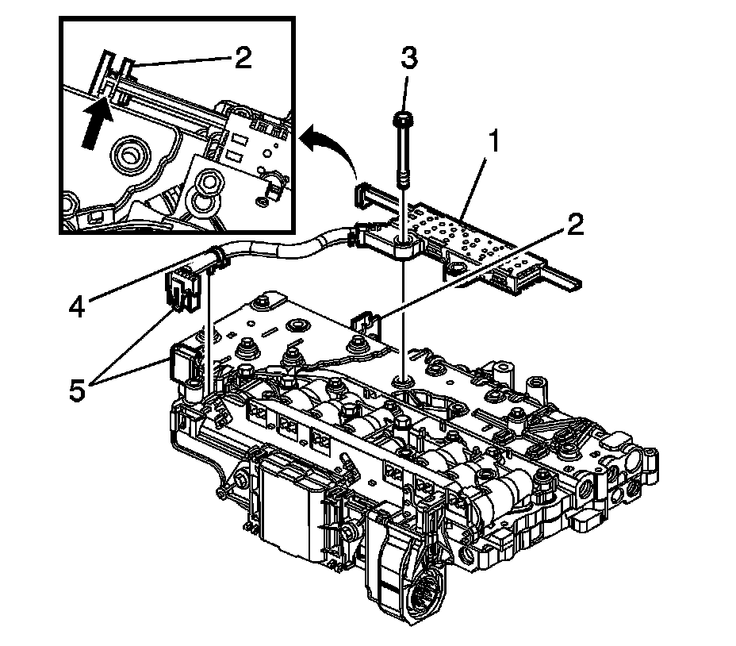
5. Install the manual shift shaft position switch assembly (1). Align the switch activator slide with the manual valve link. Secure with 1 bolt (3). Hand tighten only.
Important: The wiring harness clip (4) on the manual shift shaft position switch does not need to be replaced if damaged or missing. The clip functions only as a manufacturing assembly aid to keep the harness clear during an automated bolt installation process. If the clip is damaged, simply remove and discard.
6. Connect and lock the manual shift shaft position switch electrical connector (5) to the control solenoid valve assembly and attach the wiring harness clip (4).
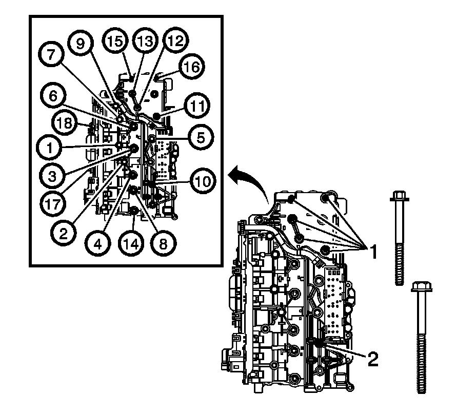
7. Install the 5 remaining bolts (1) and 1 remaining bolt (2). Hand tighten only.
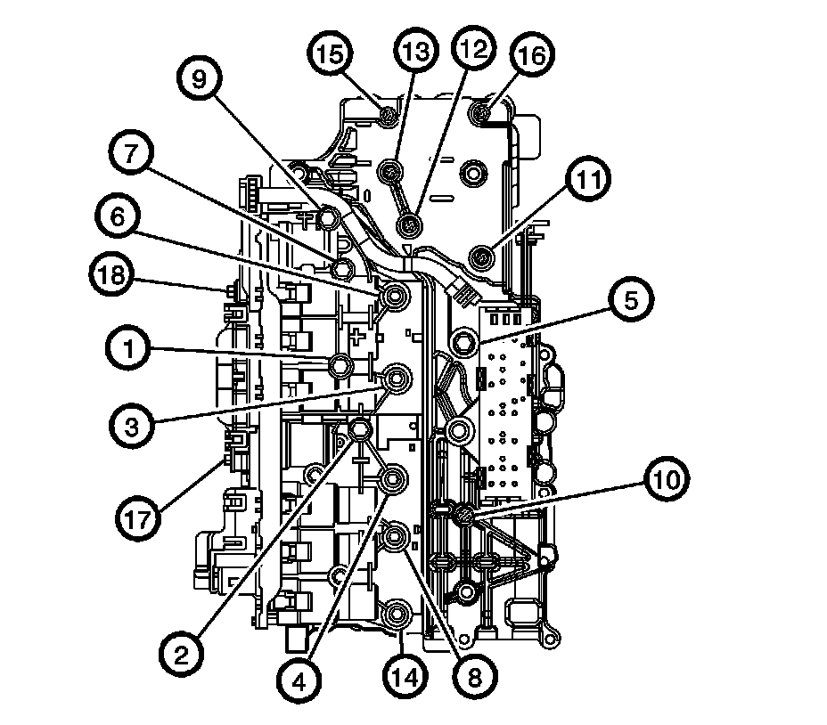
Notice: Bolt torque sequencing is critical to the proper function of the control solenoid valve assembly. Failure to follow the required sequencing may result in transmission malfunction.
Notice: Refer to Fastener Notice (Fastener Notice) .
8. Tighten all bolts in the sequence shown. The 2 "heat sink" bolts (17,18) must be tightened last.
Tighten bolts to 8 N.m (6 lb ft).
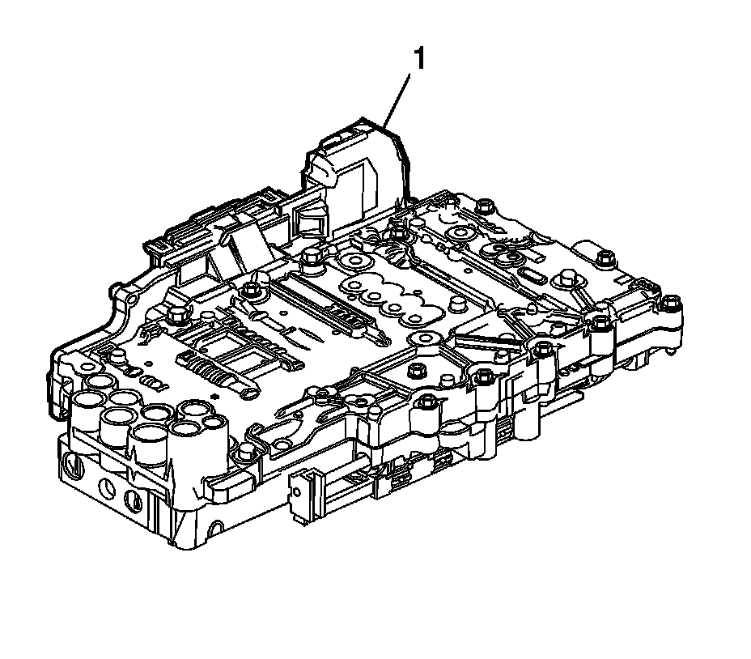
9. Inspect the contact area between the "heat sink" area of the control solenoid valve assembly (1) and the valve body. There should be no visible gap. If a gap exists, loosen all 18 bolts and retighten in the sequence shown.
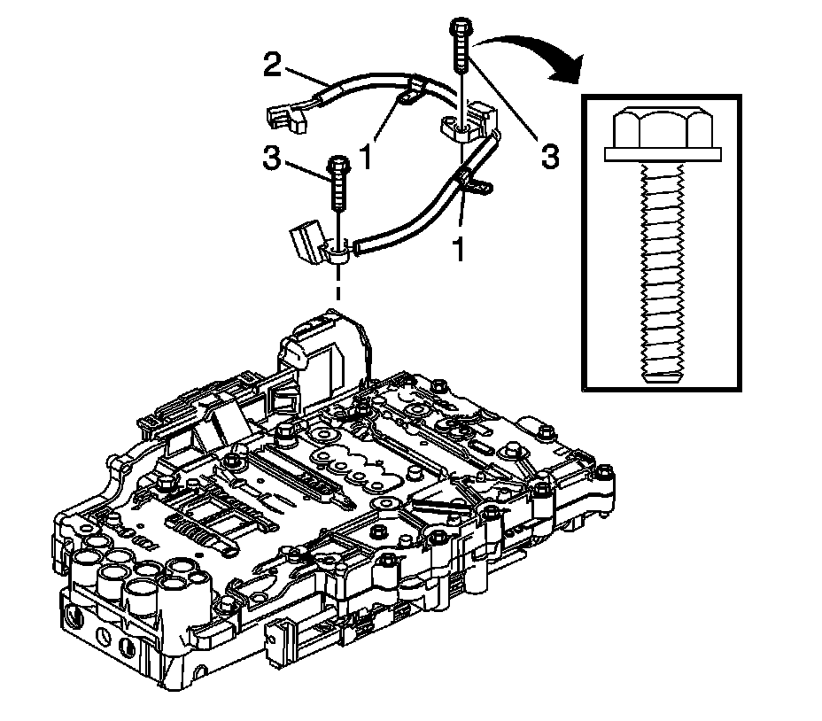
10. Inspect the 2 input and output speed sensor wiring harness clips (1) for damage. Replace if damaged.
11. Connect the speed sensor electrical connector (2) to the control solenoid valve assembly.
12. Install the upper and lower control valve body assembly. Refer to Control Valve Lower Body and Upper Body Replacement (Service and Repair) .
13. Install the electrical connector passage sleeve. Refer to Automatic Transmission Electrical Connector Passage Sleeve Replacement (Automatic Transmission Electrical Connector Passage Sleeve Replacement) .
14. Install the transmission oil pan and filter. Refer to Automatic Transmission Fluid, Fluid Pan and/or Filter Replacement (Removal and Replacement) .
Important: After an internal transmission repair or internal part replacement, the Service Fast Learn Adapt procedure should be performed. Refer to Service Fast Learn Adapts (Programming and Relearning) .
15. Reset the transmission TAP values. Refer to Service Fast Learn Adapts (Programming and Relearning) .
16. Refer to Control Module References (Programming and Relearning) for programming and setup information.